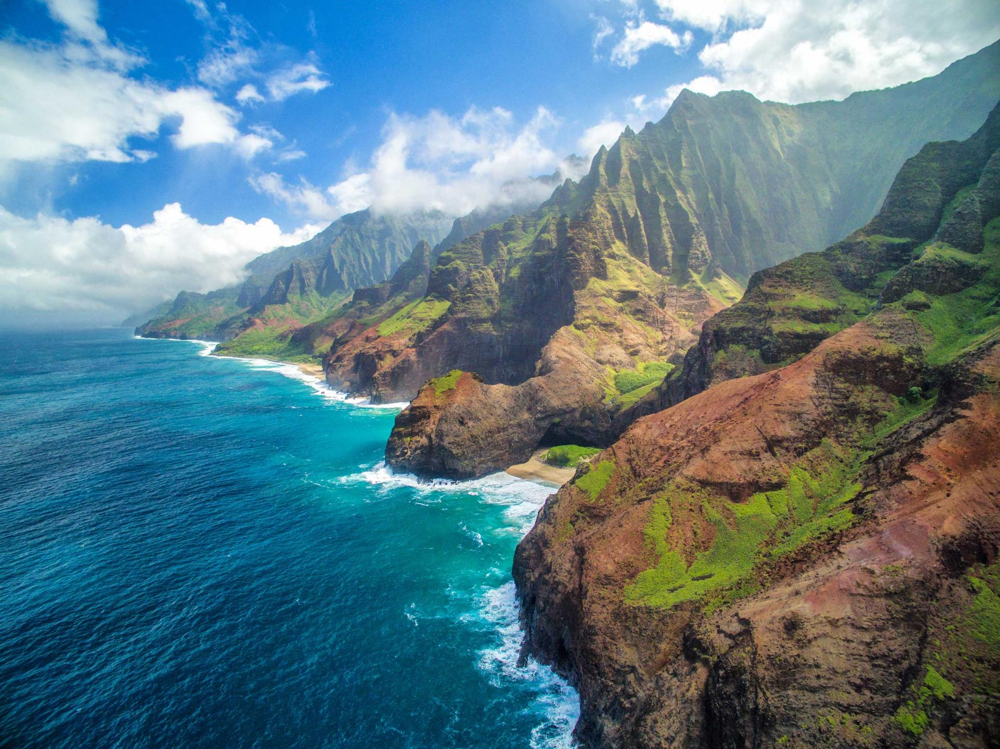
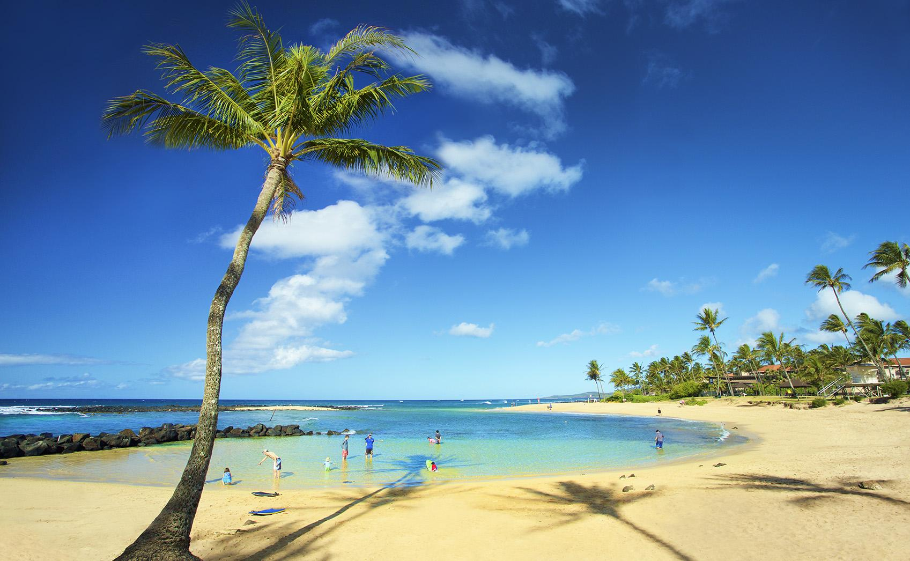

Kauaʻi is Hawaiʻi's fourth largest island and is sometimes called the "Garden Island," which is an entirely accurate description. The oldest and northernmost island in the Hawaiian chain is draped in emerald valleys, sharp mountain spires and jagged cliffs aged by time and the elements. Centuries of growth have formed tropical rainforests, forking rivers and cascading waterfalls! Some parts of Kauaʻi are only accessible by sea or air, revealing views beyond your imagination. More than just dramatic beauty, the island is home to a variety of outdoor activities. You can kayak the Wailua River, snorkel on Poʻipū Beach, hike the trails of Kōkeʻe State Park, or go ziplining above Kauaʻi's lush valleys. But, it is the island's laid-back atmosphere and rich culture found in its small towns that make it truly timeless. Explore the regions of Kauaʻi and make your escape to discover the undeniable allure of the island.
Kauaʻi’s largest navigable river is the Wailua River, which weaves by gorgeous waterfalls and lush, jungle landscapes along the island’s East Side. Kauaʻi has the only navigable rivers in Hawaiʻi, and the Wailua River is the largest. The 20-mile long river, that once wove through the settings of seven different heiau (temples), flows from the 5,148-foot Mount Waiʻaleʻale in the center of the island. The Wailua River feeds two popular and accessible waterfalls: ʻŌpaekaʻa Falls and Wailua Falls. The scenic river itself can be explored by kayak, SUP or outrigger canoe, and a boat tour is also available. Open-air boats also offer guided tours of the Fern Grotto, a natural lava rock cave sheltered by draping ferns. This romantic area is a popular wedding venue. Also look for the Nounou Mountains (Sleeping Giant), a formation on a mountain ridge between Wailua and Kapaʻa that looks like a human figure lying on its back. You can also see the river by car. Take Kuamoʻo Road (Hwy. 580), which goes inland along the north side of the river from Kūhiō Highway (Hwy. 56). You'll want to take in the special and sacred landmarks along the way, including heiau (temples), historical sites, ʻŌpaekaʻa Falls and the Keāhua Arboretum.
North of Waimea Canyon on Kauaʻi’s West Side is Kōkeʻe State Park. Spread over 4,345 acres on a plateau 3,200 to 4,200 feet above sea level, Kōkeʻe State Park is covered in forest, wild flowers and hiking trails making it an excellent spot to see native plants and colorful endemic Hawaiian forest birds like the ʻapapane, ‘iwi and moa. The park also offers roughly 45 miles of the state's finest hiking trails. Some trails lead to views of Waimea Canyon, others wind through wet forests with sweeping views of valleys opening up to the North Shore. The Kōkeʻe Natural History Museum is a must-stop shop for information about the park and the trails. Exhibits will give you an overview of the park and Waimea Canyon. Staff will also provide you with helpful assistance, advice and information on trail and weather conditions. Beyond the museum and the Lodge at Kōkeʻe (12 rustic rental cabins for campers) are two amazing lookouts. Both the Kalalau Lookout and the Puʻu o Kila Lookout offer commanding views of the Kalalau Valley stretching out to the sea. This view offers a glimpse at the towering cliffs of the Nāpali Coast. Note that the temperature drops as you climb up to the 3,200 to 4,200 foot elevations of the park. Temperatures range from 45 degrees in January to 68 degrees in July with annual rainfall of about 70 inches, so remember to dress warmly.
Kauaʻi’s largest navigable river is the Wailua River, which weaves by gorgeous waterfalls and lush, jungle landscapes along the island’s East Side. Kauaʻi has the only navigable rivers in Hawaiʻi, and the Wailua River is the largest. The 20-mile long river, that once wove through the settings of seven different heiau (temples), flows from the 5,148-foot Mount Waiʻaleʻale in the center of the island. The Wailua River feeds two popular and accessible waterfalls: ʻŌpaekaʻa Falls and Wailua Falls. The scenic river itself can be explored by kayak, SUP or outrigger canoe, and a boat tour is also available. Open-air boats also offer guided tours of the Fern Grotto, a natural lava rock cave sheltered by draping ferns. This romantic area is a popular wedding venue. Also look for the Nounou Mountains (Sleeping Giant), a formation on a mountain ridge between Wailua and Kapaʻa that looks like a human figure lying on its back. You can also see the river by car. Take Kuamoʻo Road (Hwy. 580), which goes inland along the north side of the river from Kūhiō Highway (Hwy. 56). You'll want to take in the special and sacred landmarks along the way, including heiau (temples), historical sites, ʻŌpaekaʻa Falls and the Keāhua Arboretum.
North of Waimea Canyon on Kauaʻi’s West Side is Kōkeʻe State Park. Spread over 4,345 acres on a plateau 3,200 to 4,200 feet above sea level, Kōkeʻe State Park is covered in forest, wild flowers and hiking trails making it an excellent spot to see native plants and colorful endemic Hawaiian forest birds like the ʻapapane, ‘iwi and moa. The park also offers roughly 45 miles of the state's finest hiking trails. Some trails lead to views of Waimea Canyon, others wind through wet forests with sweeping views of valleys opening up to the North Shore. The Kōkeʻe Natural History Museum is a must-stop shop for information about the park and the trails. Exhibits will give you an overview of the park and Waimea Canyon. Staff will also provide you with helpful assistance, advice and information on trail and weather conditions. Beyond the museum and the Lodge at Kōkeʻe (12 rustic rental cabins for campers) are two amazing lookouts. Both the Kalalau Lookout and the Puʻu o Kila Lookout offer commanding views of the Kalalau Valley stretching out to the sea. This view offers a glimpse at the towering cliffs of the Nāpali Coast. Note that the temperature drops as you climb up to the 3,200 to 4,200 foot elevations of the park. Temperatures range from 45 degrees in January to 68 degrees in July with annual rainfall of about 70 inches, so remember to dress warmly.

The Poʻipū Beach Park which is popular with visitors and locals alike, is a crescent-shaped beach that offers crystal-clear waters and occasional Hawaiian monk seal appearances. (If you do spot a monk seal, please be mindful by staying at least 100 feet away and no flash photography as they are currently on the endangered species list.) With lifeguards, picnic facilities, showers and a natural wading pool for young swimmers, it’s also a great destination for a family beach day. There’s a bodyboarding site directly in front of the park for older children and novice adults, a surfing site for experienced surfers and a good reef for snorkeling. From December through April, you can sometimes spot humpback whales in the distance.

Join our membership program for 3% off all trips! Members also get an extra 1% discount at when they have flown over 50000 miles with us!
Join us at (123)-456-7890